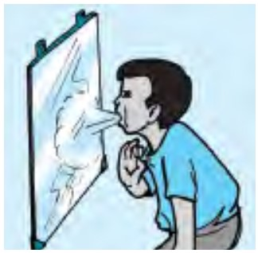

A. Organ Pernapasan Manusia
Bernapas merupakan salah satu ciri makhluk hidup. Untuk melakukan pernapasan, makhluk hidup memerlukan alat-alat pernapasan. Alat pernapasan pada tiap makhluk hidup memiliki bentuk dan fungsi yang berbeda-beda. Bagaimanakah proses jalannya pernapasan manusia?
Ketika kamu menghirup oksigen, oksigen itu masuk melalui hidung dan turun ke paru-paru kanan dan paru-paru kiri melalui kedua cabang tenggorokan yang disebut bronkus. Bronkus yang terletak di dalam paruparu ini bercabang-cabang lagi menjadi bagian lebih kecil yang disebut bronkiolus. Di ujung bronkiolus ini terdapat gelembung-gelembung udara yang disebut alveolus. Nah, di dalam alveolus inilah terjadi pertukaran oksigen dengan karbon dioksida dan uap air.
Pada saat menghembuskan napas, kamu mengeluarkan gas karbon dioksida (CO2) dan uap air (H2O). Bagaimana membuktikan bahwa ada uap air saat kamu bernapas? Agar mengetahuinya, lakukanlah kegiatan berikut ini!
|

|
Tujuan
Alat dan Bahan
Cara Kerja
|
- Bagaimanakah keadaan cermin setelah napas kamu hembuskan ke permukaannya?
- Apa yang menyebabkan keadaan cermin demikian?
Kesimpulan
Cermin tampak karena tertutup oleh
Berat sepasang paru-paru orang dewasa lebih kurang 1 kg dan dapat menampung kira-kira 5 liter air.
Tujuan
Siswa dapat mengetahui saat bernapas kamu mengeluarkan gas karbon dioksida.
- dua buah gelas
- sebuah sedotan plastik
- air
- kristal kapur atau gamping
- ember kecil
- Buatlah larutan kapur di dalam ember kecil.
- Diamkan beberapa saat hingga airnya jernih.
- Tuangkan larutan kapur itu ke dalam gelas A dan B kira-kira setengah gelas secara perlahan.
- Masukkan sedotan plastik pada gelas A.
- Hiruplah udara sedalam-dalamnya melalui hidung. Hembuskan napasmu secara
- perlahan-lahan melalui sedotan plastik yang ada di mulutmu.
- Lakukan secara berulang-ulang pada gelas A tadi.
- Amatilah warna larutan pada gelas A, kemudian bandingkan tingkat kejernihan dengan larutan pada gelas B
- Bagaimana keadaan air pada kedua gelas tersebut?
- Apa yang menyebabkan air pada gelas A demikian?
- Setelah gelas A kamu diamkan beberapa saat, pada dasar gelas A akan terdapat apa?
- Dari manakah asal endapan itu?
- Sebutkan nama endapannya!
Kesimpulan
Air pada gelas A menjadi , karena dan membentuk endapan
- Paru-paru manusia mempunyai kira-kira 2400 km saluran udara.
- Setiap permukan paru-paru manusia mempunyai luas 180 m2.
- Ada sekitar 300 juta gelembung paru-paru dan bila diratakan dapat menutupi kira-kira satu daerah lapangan tenis.
Suatu pemanas listrik dihubungkan dengan sumber tegangan 6 V dan arus listrik yang mengalir adalah sebesar 4 A. Jika pemanas itu dipakai selama 4 menit, hitung energi kalor yang dihasilkan pemanas tersebut.
Penyelesaian:
Diketahui:
V = 6 volt
I = 4 A
t = 4 menit = 4 × 60 sekon = 240 sekon
Ditanyakan: energi kalor (W)
Jawab:
W = V I t
W = 6 V × 4 A × 240 s
W = 5.760 joule
Jadi, energi kalor yang dihasilkan setrika adalah 5.760 joule.
Setrika listrik bertegangan 220 V dihubungkan dengan sumber
tegangan yang bernilai sama. Jika elemen pemanas setrika tersebut
memiliki hambatan sebesar 1.000 ohm, berapa kalor yang
dihasilkannya selama dua menit?
Penyelesaian:
Diketahui:
volt
ohm
menit = sekon
Ditanyakan: energi kalor yang dihasilkan (W)
Jawab:
Rumus, W = $\frac{V^2}{R}$t
| W | = | $volt^2$ | sekon |
| ohm |
joule
Jadi, energi kalor yang dihasilkan adalah joule
*Apabila kolom menjadi warna merah, artinya jawaban yang anda masukkan salah. silahkan coba lagi
Sebuah peralatan listrik dipasang pada tegangan listrik sebesar 12 volt dan arus yang mengalir adalah sebesar 750 mA. Hitunglah besarnya energi listrik yang dibutuhkan dalam jangka waktu 1 menit ?
Penyelesaian
Diketahui :
volt
ampere
sekon
Ditanya : W = ?
Jawab:
Rumus, W = x x
W = x x
joule
*Apabila kolom menjadi warna merah, artinya jawaban yang anda masukkan salah. silahkan coba lagi